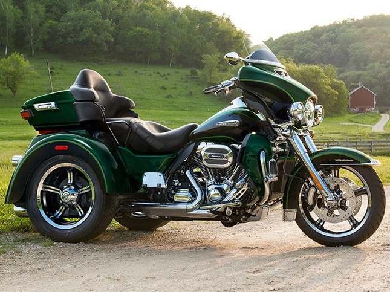

Sport bikes, also known as superbikes or racing motorcycles, are designed for high performance and agility. Built with lightweight frames, powerful engines, and advanced suspension systems, they prioritize speed, handling, and aerodynamics. These bikes are favored by enthusiasts for their ability to deliver an exhilarating ride on both the track and the road. With a crouched riding position and aggressive styling, sport bikes are engineered to provide quick acceleration, sharp cornering, and overall dynamic performance. Popular brands include Yamaha, Kawasaki, Honda, and Suzuki, each offering models that push the limits of motorcycle engineering.
Cruiser bikes are designed for comfort and style, offering a relaxed riding experience ideal for long-distance cruising. Known for their low-slung, wide frames, and larger engines, cruisers prioritize smooth, steady rides over speed or agility. With a more upright seating position and classic, often retro designs, they are perfect for leisurely rides on highways and open roads. Cruiser bikes, such as those made by Harley-Davidson, Indian, and Yamaha, are beloved for their distinctive aesthetics, powerful torque, and comfortable ergonomics, making them a popular choice for riders seeking both performance and relaxation.
Off-road bikes are specially designed motorcycles built to handle rugged, uneven terrains where regular road bikes might struggle. These bikes feature knobby tires, long suspension systems, and durable frames that allow them to navigate through dirt trails, mud, sand, and rocky landscapes. Popular among outdoor enthusiasts, off-road bikes are used for motocross, trail riding, and endurance races, offering an exciting and challenging experience for riders who love adventure and exploring the wilderness. With their versatility and toughness, off-road bikes are ideal for those seeking a more adrenaline-fueled, off-the-beaten-path ride.
Touring motorcycles are designed for long-distance travel, offering comfort, storage, and advanced features for extended road trips. Built with larger engines and smooth suspensions, these bikes prioritize rider and passenger comfort with features like cushioned seats, adjustable handlebars, and expansive luggage options. Equipped with amenities such as GPS, advanced sound systems, and climate controls, touring motorcycles are perfect for those who enjoy traveling across highways and exploring scenic routes in comfort. With their durability and ease of handling, touring motorcycles provide an ideal way to experience long journeys on two wheels.
Trike motorcycles are three-wheeled vehicles that combine the power and thrill of a motorcycle with the added stability of an extra wheel. Designed for riders seeking a unique riding experience, trikes offer a comfortable and secure alternative to traditional two-wheeled motorcycles. With a wide range of designs, including custom-built models and factory-produced trikes, they cater to various preferences, from touring and cruising to performance and adventure. Whether for long-distance rides or leisurely cruises, trike motorcycles provide an exciting yet stable way to enjoy the open road.
Mopeds are lightweight, low-powered two-wheelers designed for easy and efficient short-distance travel. Typically equipped with a small engine (50cc or less), mopeds are known for their simplicity, fuel efficiency, and ease of use, making them a popular choice for city commuting and urban transportation. With features like pedals (in some models) or a small throttle for acceleration, mopeds offer a fun and economical way to navigate through traffic. Ideal for new riders and those seeking an affordable and practical alternative to cars, mopeds are perfect for quick trips and getting around congested areas.